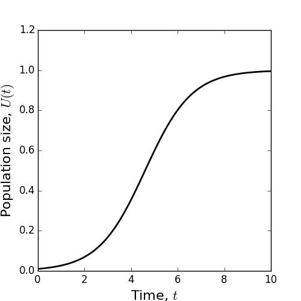

Lecture 5. From difference to differential equations#
5.1 The continuum limit#
Difference equations are an intuitive way to model many dynamical systems, but they can be tricky to deal with from an analytic perspective. On the other hand, differential equations (some of which you met in school) admit a far wider range of analytic techniques. Moreover, they are formally related to difference equations. Here we will explain this relation.
Recall Equation (4) giving the general formula for a difference equation describing the evolution of a quantity \(U(t)\), as follows
where \(f\) is some function. Also, recall (from the Note after Equation 4) that we can generalise this to a situation where we are considering an arbitrary time-step, \(\tau\), to give the following
We can rearrange Equation (37) to give
Now, the limit of the left-hand side as \(\tau \rightarrow 0\) is
which is the derivative of \(U\) with respect to \(t\). You should have seen this at school. However, if you have forgotten it (and/or why it is true), be aware that you will prove this rigorously in a few weeks as part of MAS106. For now, you can just take my word for it! In any case, we arrive at the following differential equation, called the continuum limit
This is perhaps a bit abstract to appreciate immediately, so let’s look at a concrete example. Consider the discrete exponential model from Equation (5), used to model population growth. Writing this with a time-step of \(\tau\) gives
Notice that we have replaced \(r\) with \(r \tau\). Why? Well, if each organism produces \(r\) new organisms in one unit of time then it will produce \(r \tau\) organisms in \(\tau\) units of time.
Then, rearranging Equation (42), we have
and taking the limit as \(\tau \rightarrow 0\) gives
This is called the continuous exponential model for population growth and is an example of a differential equation (one that relates a quantity and its derivatives).
In a similar fashion, we can show that the logistic model from Equation 7 gives rise to the following differential equation in the continuous-time limit.
You will show this as part of the exercises at the end of this lecture. Equation (45) is another example of a differential equation, called the continuous logistic model for population growth.
5.2 Separable solutions: examples#
Both Equations 44 and 45 can be solved using a technique (separation of variables) that you learned at school, but may have forgotten. We will go through it here for these two examples, then explain the general method in the Section 5.3.
Example 9
Find the solution to Equation (44) where \(U(0)=1\).
Solution.
First we rearrange Equation (44) to give
Notice that I have written \(U\) instead of \(U(t)\) as a short-hand. This is simply to make the notation less cumbersome. We can then integrate both sides with respect to \(t\) to give
Informally, you can ‘cancel the dts’ on the left-hand side. This is not a terribly rigorous thing to say, but it can be made rigorous with some effort (which I will not trouble you with), and moreover it works! Thus we have
leading to
for some constant \(c\). Taking the exponential of each side gives
where \(A=\exp (c)\).
Technical aside. If one is being pedantic, Equation (49) should really read \(\ln (|U|)=r t+c\) so that Equation (50) reads \(|U(t)|=\exp (r t+c)=A \exp (r t)\). But we can take care of those pesky modulus signs. First notice that any solution \(U(t)\) must be continuous. For \(|U(t)|=\exp (r t+c)=A \exp (r t)\), the only way this can happen is if \(U(t) \leq 0\) or \(U(t) \geq 0\). Since \(U(0)=1>0\), we must have \(U(t) \geq 0\) so \(|U(t)|=U(t)\) and Equations (49) and (50) are true.
Since \(U(0)=1\), by the assumption of the question, and \(U(0)=A \exp (0)\) by Equation (50), we have \(A=U(0)=1\). Hence
Now, in Proposition 1, we found a solution to the original difference equation, Equation (5). Notice that Equation (5) is just Equation (42) with \(\tau=1\). So it is valuable to compare Equation (51) with the solution of Equation (5). They ought to be similar, right?
We found that, in Proposition 1, \(U(t)=U(0)(1+r)^{t}\). By a similar argument
This is not the same as Equation (51). However,
For small \(\tau, \ln (1+r \tau) \approx r \tau\). (You may not have known this, but now you do! The reason why it’s true will be covered in MAS106 later; it has to do with Taylor Series.) Hence, for small \(\tau\),
This is the same as Equation 51 . Hence, for small time-steps \(\tau\), the differential equation agrees with the difference equation. We’d expect this, right?
Example 10
Solve Equation (45) for \(U(0)=K / 10\).
Solution.
First we rearrange Equation (45) to give
Then, as with Example 9, we integrate both sides, to give
To integrate the left-hand side of Equation (57), we use partial fractions. Remember them? If not this is what you do. We want to find constants \(A\) and \(B\) such that
Looking at right-hand side of Equation (58), we have
Equating the left-hand side of Equation (58) with the right-hand side of Equation (59) gives
Equating coefficients of \(U\) leads to \(0=B-A\) and equating constants gives \(K=A K \Longrightarrow\) \(A=1\). Hence \(A=B=1\) so
Putting this into Equation (57) gives
(Technical aside: as in the previous example, we have ignored the modulus sign when taking the natural logarithm, thus finding a solution that has \(0<U(t)<K\) which is correct because \(0<U(0)=K / 10<K\).) Notice that, as \(t\) gets very big, \(U(t)\) approaches \(K\), so we always reach a steady state solution (e.g. Figure 8).
Figure 8: A plot of the solution to the continuous logistic model (Equation 62) for \(C=0.01\), \(r=1, K=1\).
Now let’s apply the initial condition \(U(0)=K / 10\)
Hence the particular solution is
To compare the general solution from Equation (62) to the discrete logistic model, recall two things. First, we were not able to find an exact analytic solution to the discrete logistic model (see Lecture 3), but we can for the continuous logistic model (Equation 62). Second, the behaviour of the discrete solution can get pretty wild (again, see Lecture 3), including solutions that never settle, period doubling, and chaos. In contrast, the continuous logistic model always tends towards a constant, positive, steady state, \(K\) in a monotonic fashion (e.g. Figure 8).
So be careful in choosing your model! The choice of discrete or continuous could lead to a big difference in the predicted outcome. In your model choice, you should be informed by the underlying reality. For example, is your organism one that could reproduce at any time (like single-celled organisms) or only at a specific time (like sheep, who reproduce once per year in spring)? If the former, then a continuous-time formalism may be better (i.e. differential equations); if the latter, then use discrete-time equations (i.e. difference equations).
5.3 Separable solutions: general method#
Definition 4
A separable ordinary differential equation is an equation of the following form
where \(f(t)\) and \(g(U)\) are functions.
In general, if you have a separable ordinary differential equation, then you can rearrange it to give
Integrating with respect to \(t\) gives
Then, as long as you can integrate \(g(U)\) and \(f(t)\), you have a solution - hooray!
BUT… be warned, integration is a DARK ART! Many apparently innocuous functions can be very difficult to solve. There are plenty that no mathematician knows how to solve. If you don’t believe me, try solving \(\int \exp \left(x^{3}\right) \mathrm{d} x\). Not so easy, is it?
Lecture 5 Homework exercises#
Exercise 11
Find the continuum limit of the logistic model (Equation 7).
Exercise 12
For the weather model from Example 7, assume that the probability of transitioning from wet to dry in a time period \(\tau\) is \(p \tau\), and the probability of transitioning from dry to dry in a time period \(\tau\) is \(1-\tau(1-q)\). Write down the resulting model and find its continuum limit. [Hard] Solve the resulting differential equation.
Exercise 13
Find the continuum limit of the competition model from Example 8. You can assume that the rates \(r, a, b, \alpha, \beta\) are multiplied by \(\tau\) when transitioning from a time-step of 1 to a time-step of \(\tau\). Don’t try to solve the continuum model though - that’s proper tough! We’ll return to this later in the module.
Exercise 14
Solve the following separable differential equations
(a) \(\frac{\mathrm{d} U}{\mathrm{~d} t}=\frac{t}{U}\)
(b) \(\frac{\mathrm{d} U}{\mathrm{~d} t}=U t\)
(c) \(\frac{\mathrm{d} U}{\mathrm{~d} t}=\frac{\sin (t)}{U^{2}}\)
(d) \(\frac{\mathrm{d} U}{\mathrm{~d} t}=\exp (t) \exp (U)\)
(e) \(\frac{\mathrm{d} U}{\mathrm{~d} t}=\frac{\tan (t)}{U}\)